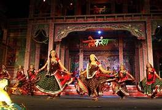

Madhya Pradesh Unvieled: A Journey Through Art & Culture
Welcome to my blog Madhya Pradesh Unveiled: A Journey to Art and Culture, I'm Pratyaksha Garg, a resident of the Heart state of India, i.e., M.P.
In this blog, I will take you on a journey through the amazing art forms and rich heritage of this state.
From exploring its ancient temple architecture to the varieties of sculpture and art, embark on an enchanting journey
through the vibrant mosaic of art, timeless traditions, and cultural heritage of Central India.
I hope you will find this blog interesting and knowledgeable.
Blog Post-1
Exploring the Art of Madhya Pradesh
Title:Gond Art: A Canvas of Tribal Expression
Summary: Gond art, a centuries-old tradition of the Gond tribe, showcases the vibrant spirit of rural Madhya Pradesh. With intricate patterns and earthy hues, Gond paintings narrate stories of nature, mythology, and tribal life. Let's delve into the world of Gond art, where every stroke has a tale to tell.
Content: Introduction to Gond Art
Gond art, originating from the Gond tribe of Madhya Pradesh, is more than just a visual treat—it is a celebration of life itself. The Gond people believe that viewing a good image brings good luck, and this belief is intricately woven into the colorful patterns and motifs of their art. Traditionally, this art form was used to decorate walls and floors during festivals and rituals, but today, it has found its way onto canvas, paper, and even fabric.
The Unique Style of Gond Paintings
The hallmark of Gond art is its use of dots, dashes, and vibrant colors to depict elements of nature like trees, animals, birds, and even deities. The fine detailing creates a tapestry of patterns, where every element is connected. For example, a tree might not just be a tree; it could symbolize the cycle of life, or be personified as a guardian of the tribe.
Video: Gond Art of Madhya Pradesh
Blog Post-2
Heritage & Culture of Madhya Pradesh
Title:Mandu: The Storybook City of Love and Legend
Summary:Set amidst the Vindhya hills, the ancient city of Mandu is a place where history, legend, and romance intertwine. Known for the legendary love story of Rani Roopmati and Baz Bahadur, Mandu is filled with architectural marvels and captivating tales. Let’s uncover the magic of Mandu!
Content: Mandu: An Ancient Gem
Perched on the Vindhya ranges, Mandu has been a witness to centuries of love, war, and architectural splendor. Its palaces, forts, and mosques speak of a bygone era, where romance bloomed amidst battles for power. The city’s romantic atmosphere is deeply tied to the love story of Sultan Baz Bahadur and his queen, Roopmati, whose tragic tale still echoes through the corridors of Mandu.
Architectural Wonders of Mandu
Mandu is home to some of the finest examples of Afghan architecture in India. The grand Jahaz Mahal (Ship Palace), which appears to float between two lakes, is a breathtaking structure that reflects the ingenuity of medieval builders. The Hindola Mahal (Swing Palace) and the Rewa Kund are other notable monuments that draw travelers from around the world.
Video: Mandu Palace- Epitome of Love
Blog Post-3
Glorious Festivals and Traditions
Title: The Unique Blend of Tribes and Traditions in Madhya Pradesh and their festivals
Summary:Madhya Pradesh is a land where traditions are alive and vibrant, celebrated with deep-rooted customs and festivals that unite its diverse communities. From grand events like Diwali and Holi to the lesser-known yet fascinating tribal festivals, each celebration reflects the rich cultural heritage of the state. Join us as we delve into the unique festivals and traditions that bring Madhya Pradesh to life throughout the year.
Content:Madhya Pradesh is a cultural tapestry woven with myriad traditions and festivals, each with its own significance. The state's festivals are not just rituals but vibrant expressions of the collective spirit, celebrated with much enthusiasm and devotion. Whether you're witnessing the grandeur of Diwali or Holi, or immersing yourself in the local tribal celebrations like Bhagoria, you'll find that the festivals are a reflection of Madhya Pradesh’s diversity.
Diwali, the festival of lights, illuminates the state with lamps and fireworks, while Holi, the festival of colors, sees people joyfully throwing colors and embracing unity. Apart from these, Madhya Pradesh’s tribal communities add their own unique charm to the cultural landscape. The Bhagoria festival, for instance, celebrated by the Bhil and Bhilala tribes, is a vibrant mix of song, dance, and a fascinating tradition of matchmaking.
Not only do these festivals provide an insight into the cultural life of Madhya Pradesh, but they also act as an occasion for people to come together, transcending barriers of caste, religion, and community. They remind us of the shared joy and harmony that lies at the heart of the state's traditions. Through a blend of tribal and mainstream culture, these festivals keep alive the essence of Madhya Pradesh’s rich heritage.

Video: Have a look on Festivals & Taditions of Madhya Pradesh
About Me
Hello, My name is Pratyaksha Garg, resident of "Heart State of India". I am a passionate wanderer, photographer, and cultural enthusiast. This blog is a space where I share my thoughts, experiences, and the things that fascinate me. Through this blog, I hope to inspire and connect with like-minded individuals. Expect posts about art, culture, photography, and personal musings.
Contact Me
I'd love to hear from you! Feel free to reach out through the following: